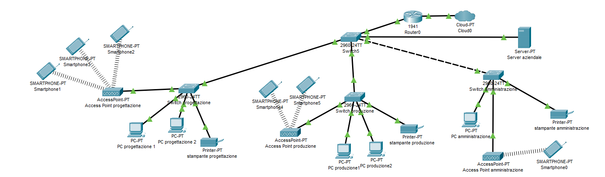

Il progetto "gestionerete" rappresenta una soluzione completa per il monitoraggio e la gestione di reti aziendali, sviluppato attraverso un approccio multidisciplinare che unisce competenze informatiche, matematiche e umanistiche.
Il sistema è stato realizzato utilizzando le seguenti tecnologie:
MySQL per la gestione del database relazionale
PHP per lo sviluppo del backend
Packet Tracer per la simulazione e progettazione della rete
Eventi e procedure SQL per l'automazione dei processi
Le principali funzionalità offerte dal sistema includono:
Monitoraggio in tempo reale dello stato dei dispositivi (Online/Offline)
Generazione automatica di allarmi in caso di guasti o anomalie
Assegnazione di dispositivi a utenti specifici per una migliore tracciabilità
Automazione dei processi di controllo attraverso eventi schedulati
Diagramma dell'architettura del sistema
Struttura del Database
Il cuore del sistema risiede nel database relazionale "gestionerete", progettato per garantire efficienza e scalabilità. La struttura è composta da quattro tabelle principali interconnesse:
Tabella Dispositivi
Campo
Tipo
Descrizione
ID_D
INT (PK)
Identificativo univoco del dispositivo
Indirizzo_IP
VARCHAR(15)
Indirizzo IP del dispositivo
Indirizzo_MAC
VARCHAR(17)
Indirizzo MAC del dispositivo
Tipo_Dispositivo
ENUM
Tipologia (PC, Stampante, Router, Server)
Stato
ENUM
Stato corrente (Online/Offline)
ID_US
INT (FK)
Chiave esterna all'utente assegnato
Tabella User
Campo
Tipo
Descrizione
ID_US
INT (PK)
Identificativo univoco dell'utente
Username
VARCHAR(30)
Nome utente per l'accesso
Email
VARCHAR(50)
Indirizzo email
Ruolo
ENUM
Tipologia utente (amministratore, operatore)
Data_Registrazione
DATETIME
Data di registrazione
Ultimo_Login
DATETIME
Data e ora dell'ultimo accesso
Tabella Info
Questa tabella contiene informazioni tecniche aggiuntive sui dispositivi:
Campo
Tipo
Descrizione
ID_I
INT (PK)
Identificativo univoco
Porta
INT
Porta di comunicazione principale
Protocollo
VARCHAR(20)
Protocollo utilizzato
Funzionalità
TEXT
Descrizione delle funzionalità
ID_D
INT (FK)
Chiave esterna al dispositivo
Tabella Allarmi
Registra tutti gli allarmi generati dal sistema:
Campo
Tipo
Descrizione
ID_A
INT (PK)
Identificativo univoco dell'allarme
Tipo
VARCHAR(50)
Tipologia (es. "PC Offline")
Risolto
BOOLEAN
Stato di risoluzione (0/1)
Data_Allarme
DATETIME
Data e ora di generazione
Data_Ris
DATETIME
Data e ora di risoluzione
ID_D
INT (FK)
Chiave esterna al dispositivo
Funzionalità Principali
Monitoraggio Automatico
Il sistema include potenti funzioni di automazione implementate tramite procedure SQL:
Procedura CambiaStatoPC
Simula guasti casuali modificando lo stato dei dispositivi:
CREATE PROCEDURE CambiaStatoPC()
BEGIN
DECLARE done INT DEFAULT 0;
DECLARE pc_id INT;
DECLARE pc_stato VARCHAR(10);
DECLARE cur CURSOR FOR SELECT ID_D, Stato FROM Dispositivi WHERE Tipo_Dispositivo = 'PC';
DECLARE CONTINUE HANDLER FOR NOT FOUND SET done = 1;
OPEN cur;
pc_loop: LOOP
FETCH cur INTO pc_id, pc_stato;
IF done THEN LEAVE pc_loop; END IF;
IF RAND() < 0.5 THEN
IF pc_stato = 'Online' THEN
UPDATE Dispositivi SET Stato = 'Offline' WHERE ID_D = pc_id;
INSERT INTO Allarmi (Tipo, Risolto, Data_Allarme, Data_Ris, ID_D)
VALUES ('PC Offline', FALSE, NOW(), NULL, pc_id);
ELSE
UPDATE Dispositivi SET Stato = 'Online' WHERE ID_D = pc_id;
UPDATE Allarmi
SET Risolto = TRUE, Data_Ris = NOW()
WHERE ID_D = pc_id AND Tipo = 'PC Offline' AND Risolto = FALSE;
END IF;
END IF;
END LOOP;
CLOSE cur;
END;
Procedura PuliziaAllarmiRisolti
Mantiene il database ottimizzato eliminando gli allarmi risolti:
CREATE PROCEDURE PuliziaAllarmiRisolti()
BEGIN
DELETE FROM Allarmi
WHERE Risolto = TRUE
AND Data_Ris < NOW() - INTERVAL 1 DAY;
SELECT CONCAT('Eliminati ', ROW_COUNT(), ' allarmi risolti') AS Risultato;
END;
Gestione Allarmi
Il sistema offre un sofisticato meccanismo di gestione allarmi:
Generazione automatica quando viene rilevato un dispositivo offline
Storico completo con data di creazione e risoluzione
Interfaccia di gestione per gli amministratori
Notifiche in tempo reale per gli allarmi critici
Tracciamento Utenti e Dispositivi
Funzionalità avanzate per la gestione degli accessi:
Assegnazione di dispositivi a utenti specifici
Registrazione dettagliata delle sessioni (login/logout)
Controllo degli accessi basato sui ruoli
Reportistica sulle attività degli utenti
Rete Simulata in Packet Tracer
Per testare il sistema è stata progettata una rete simulata in Cisco Packet Tracer:

Architettura della rete simulata
Dispositivi principali
3 Switch (uno per ogni reparto: progettazione, produzione, amministrazione)
9 PC (3 per ogni reparto)
3 Access Point per la connessione wireless
3 Smartphone (uno per reparto)
1 Router centrale con connessione Internet
1 Server per il sistema gestionerete
Integrazione con il sistema
Tutti i dispositivi della rete simulata sono mappati nel database:
Ogni dispositivo è registrato con il suo tipo specifico
Lo stato viene aggiornato in base alla connettività
Gli utenti sono associati ai dispositivi che utilizzano
Applicazione del Teorema di Bayes
Il teorema di Bayes è stato applicato per ottimizzare la gestione degli allarmi:
P(A|B) = [P(B|A) × P(A)] / P(B)
Contesto applicativo
Determinare la probabilità che un dispositivo sia realmente guasto quando viene generato un allarme:
Dati disponibili
P(G) = Probabilità a priori di guasto = 5% (0.05)
P(A|G) = Probabilità di allarme dato il guasto = 90% (0.9)
P(A|¬G) = Probabilità di falso allarme = 10% (0.1)